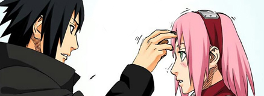

Eu me chamo Welliton Moreira, tenho 24 anos e vou falar um pouco de mim, dos meu gostos e dos meu planos futuros.
Sou estudante de Sistemas para Internet da Faculdade de Tecnologia de Jales (FATEC), desde sempre gostei da área de tecnologia da informação, e fiz diversos cursos voltados para as mais diversas áreas. Sou formado em Técnico em Contabilidade e Técnico em Informática para Internet pela Etec Fernandópolis e fiz um semestre em Administração.
Venho de familia humilde, mas que me dá apoio em tudo que faço. Atualmente trabalho na Infosis Desenvolvimento de Sistemas na parte de Suporte ao cliente, e comecei a minha jornada.
No meu tempo livre eu adoro ver filmes, séries e animes, tudo voltado a cultura nerd, gosto de desenhar mangás e inventar de tudo pra não ficar parado em tempo livre. Amo jogos, principalmente os que tem uma boa história e prende minha atenção.
Estou namorando há um ano com uma pessoa maravilhosa que também me dá muito apoio, ela é a minha verdadeira inspiração.
Além de tudo isso, sou cosplayer, ou seja, me visto dos meus persongens favoritos para participarde eventos geek por toda região, é meu hobbie e talvez um possível futuro trabalho. Meus planos para o futuro são o de começar a construir meu patrimônio, ter um emprego dos sonhos, uma família quase perfeita, um ambiente para eu começar a deixar meu legado e ajudar o máximo de pessoas que eu conseguir.
Seja bem vindo ao meu blog!!
